| Species | N | Mean body mass (g) | Standard error (g) |
|---|---|---|---|
| Chinstrap | 34 | 3527.21 | 48.93 |
| Gentoo | 58 | 4679.74 | 36.97 |
| Adelie | 73 | 3368.84 | 31.53 |
1 Visualising data
When we have got our data safely tucked into a spreadsheet. Now we need to tease out of it the answers to our question(s) and to decide whether we have evidence enough to reject our null hypotheses, or not, in which case we will fail to reject them.
Let’s take the example of the Palmer penguins dataset. This set contains measurements of bill depth, bill length, flipper length and body mass of males and females of three species of penguins: Adelie, Chinstrap and Gentoo observed on any one of three islands in the Palmer Archipelago, Antarctica.

Let’s consider only the females and ask the question:
Question: Is there any difference in body weight between the females of the three species?
from which we can generate a hypothesis:
Hypothesis: There is a difference in body weight between females ofthe three species.
Null hypothesis: There is no difference in body weight between females of the three species.
and hence a prediction of what we will find if the hypothesis is true:
Prediction if the hypothesis is true: The females of at least one species will have a different average body mass than those of at least one other species.
1.1 Summarise the data
The first thing we can do to investigate our hypotheses is to summarise the data. More often than not this means caclulating three things for each sample - the sample sizes, the mean values and the standard errors of those means.
Types of error bar
standard deviations: These tell us about the spread of values in a sample or a population. They do not systematically get bigger or smaller as the sample size increases. The standard deviation of a sample can be used as an estimate of the standard deviation of the population. We use standard deviations for descriptive purposes
standard errors of the mean These are used to indicate how precisely a sample mean estimates the true population mean. They are used for inferential purposes, whereby we try to infer from the sample mean the range of values in which the true population mean might be. Assuming normally distributed values, it would be very surprising if the true population means were more than two standard errors away from the sample means.
Standard errors are calculated from the standard deviations (SD) of the sample using the formula \(\text{SE}=\frac{\text{SD}}{\sqrt{n}}\) where n is the sample size. This means that standard errors do get systematically smaller, the larger the sample. The larger the sample, the closer the sample mean is likely to be to the true population mean. Who knew?
confidence intervals These are also inferential tools. They tell us the range of values within which the true mean might plausibly lie, at some level of confidence, usually 95%.
If you include error bars in a plot you can use any of these three errors, depending on the story you want to tell. Whichever, just must state in the figure caption which of them you have used. Failing to do this can seriously mislead the reader, since they can be of very different magnitudes.
The errors calculated here are standard errors of the mean. We use these because we want to get an idea, from our samples, of how plausible it is that the population means differ from each other. These population means could plausibly lie anywhere in the range that is our sample means plus or minus two of these standard errors.
- Does it look as though there is evidence form the data for a difference between Adelie and Chinstrop penguins?
- What about the Gentoos compared to either of the other two?
- Do we have evidence to reject the null hypothesis. (Clue: yes we do!)
1.2 Plot the data
After summarising the data, then ext thing we nearly always do in deciding what the data is telling us is to plot the data. We have several choices of how to do so and each has its pros and cons. Let’s run through a few of them.
1.2.1 Bar charts
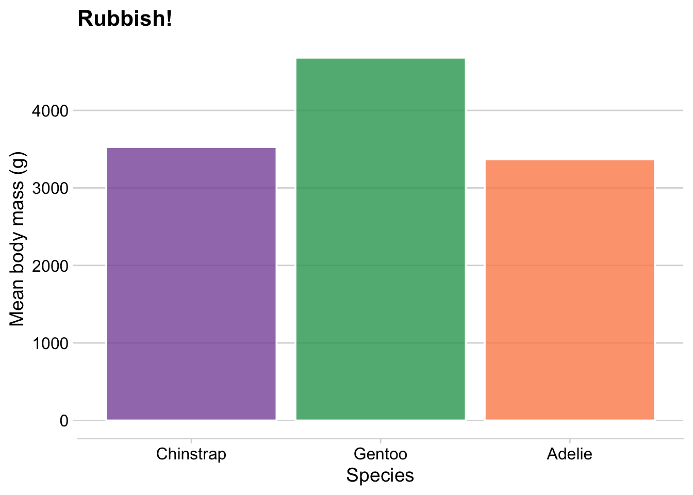
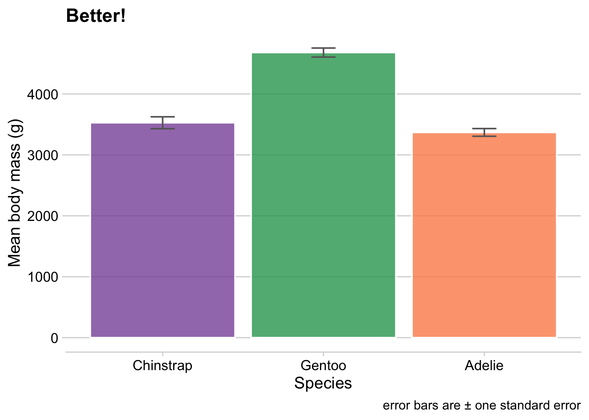
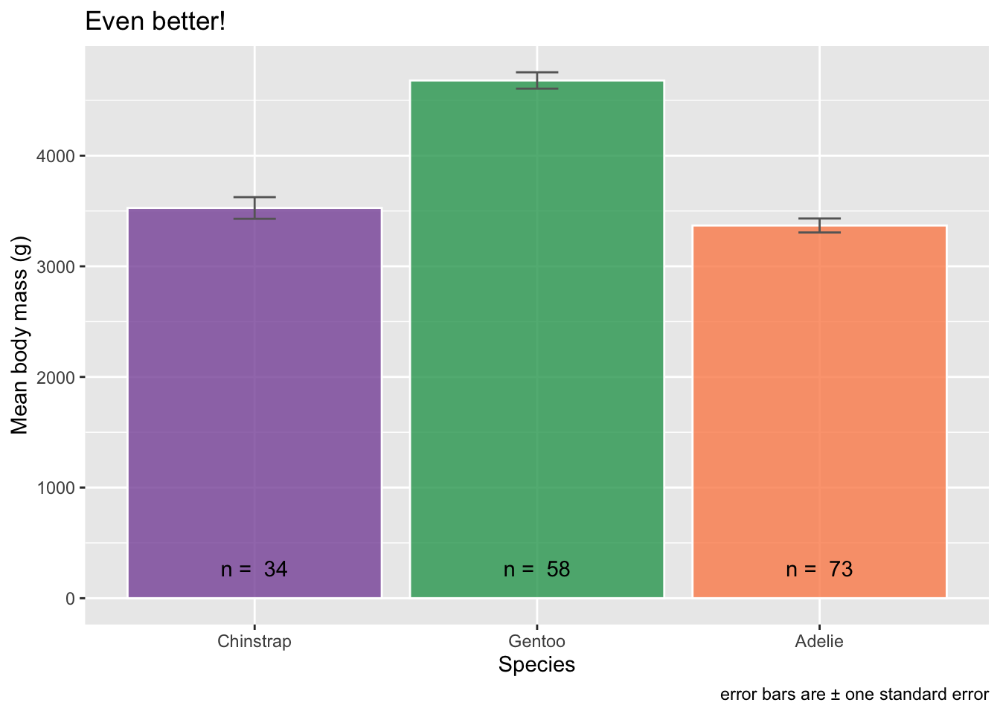
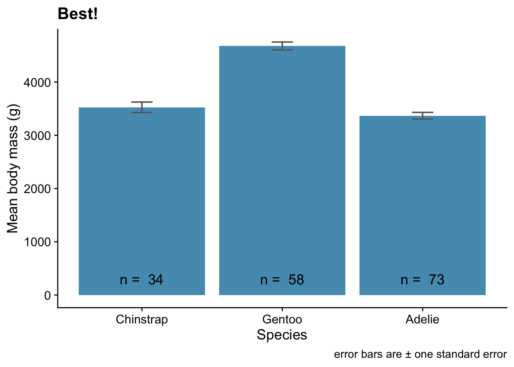
1.2.2 Histograms
In histograms the range of a variable is split into bis of. certain width, then the number of observations that fall within each bin is displayed.
They can be used to inspect a data set, even one with multiple categories, as with the penguin data. Unlike bar charts they do show the distribution of the dataset, including its central value, spread and symmetry, or lack thereof.
They do need care however in choice of the width of the bins. Make these too narrow and the histograms can look gappy, with too much scatter introduced by there not being many observations in each bin. Make the bins too wide and much of the detail of the distribution is lost. You need to find, approximately, the ‘Goldilocks’ width, one that is just right. Sometimes, though, you choose a binwidth that has meaning to you and the reader, such as widths of 1 m/s if you were doing a histogram of a set of wind speed measurements.
We illustrate that issue in Figure 1.2 where we show histograms of the body masses of the Adelie females in the sample, one with bins that are too narrow (50g), one where they are about right (100g) and one where they are too wiede (200g)
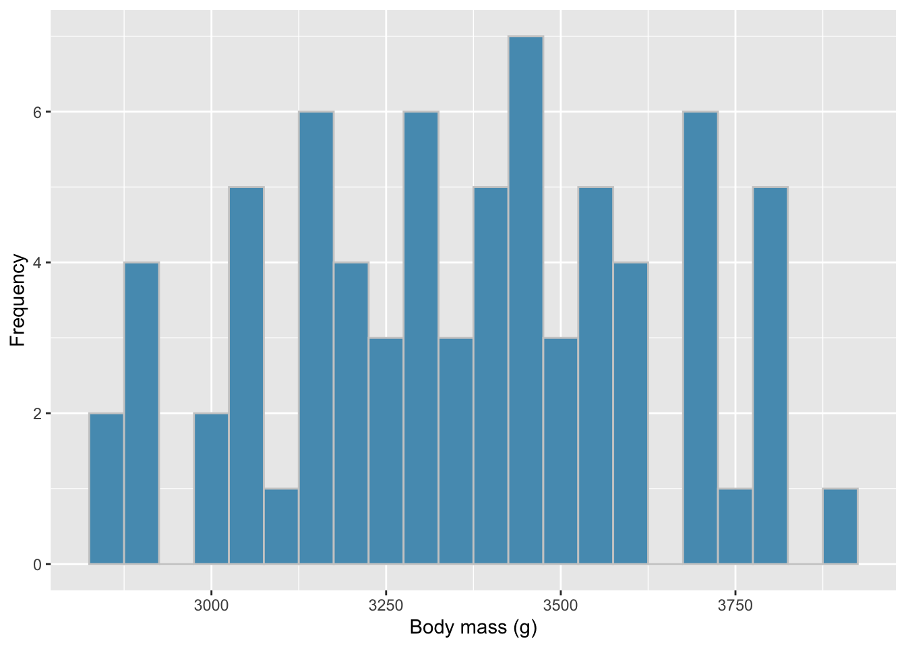
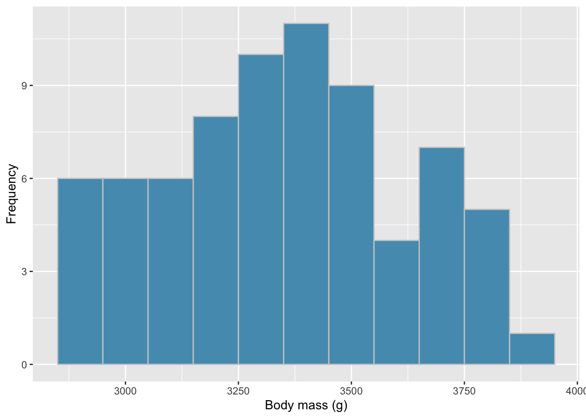
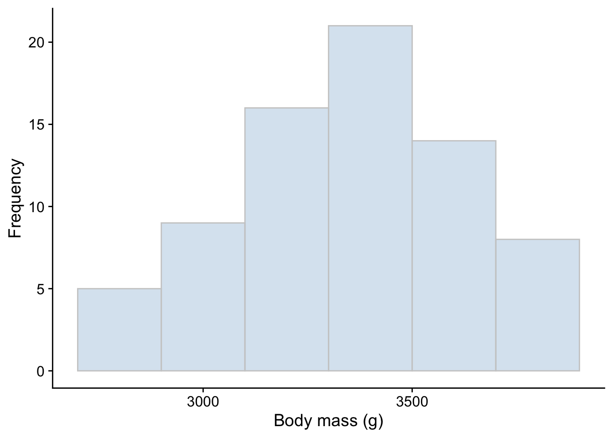
As for our hypotheses, if we plot histograms of the body masses of the females, one for each species, and put display them in a column, one on top of the other, we get some insight as to whether we are likely to reject our null hypothesis, or fail to reject it.
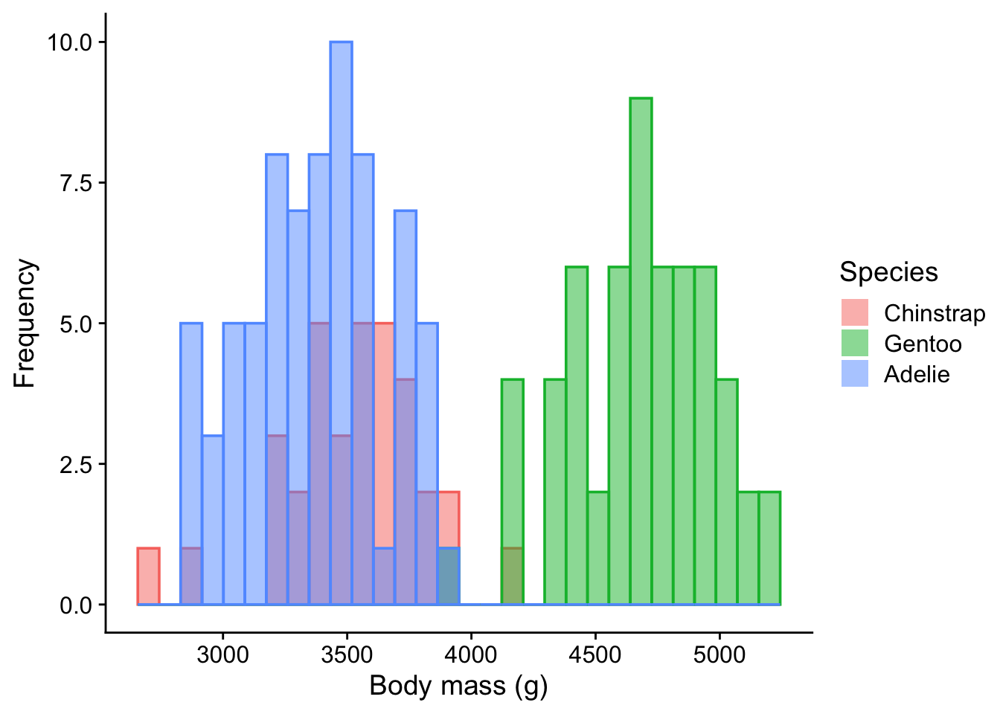
Unlike the bar charts, histograms also tell us about the shape and widths of the distributions of the three data sets. When we do actually use a statistics test to make a decision about our hypotheses, these features of the data will be very important in helping us decide which test is the right one.
1.2.3 Box plots
A very useful plot type for help in answering difference questions is the box and whisker plot, often just called a box plot. We normally use them where we have continuous data spread across one or mre categorical variables.
Here is a box and whisker plot of the female penguins body mass data, with one box for each species. Note that we have used the same colour for each box. We already know which species is which, so to use different colours would imply an additional difference that isn’t there. It would confuse the reader.
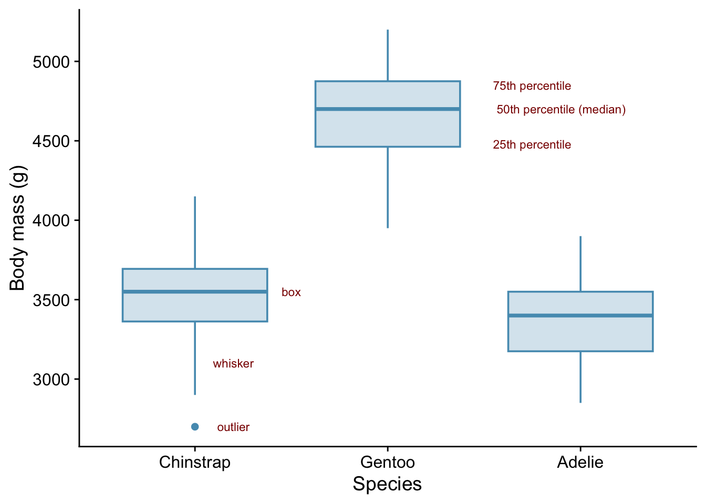
In box and whisker plots, or box plots for short, we are shown a summary of the distribution of each data set and its central location.
Consider ?fig-box-plots.
Each box shows:
- the 75th percentile of the data: this is the top of the box
- the 50th percentile of the data ie the median: this is the thick black line somewhere across the box. If the dataset is symmetric, this line is in the middle of the box.
- the 25th percentile of the data: this is the bottom of the box
- the interquartile range ie rnage that contains the middle 50% of the data. This is the range of values between the top of the box and the bottom.
the whiskers show:
- the range of the rest of the data that goes beyond the interquartile range - ie how far uop and down the range top and bottom quartiles spread.
any outlier(s) are shown by individual dots. Outliers are, more or less, jsut what the name says, daa values that are atypical of the rest of the data.
A box plot can also show:
- whether there is a clear difference between the spread of values of the different catagories. Do the boxes overlap or are they clearly separated in the vertical direction? This helps us decide whether or not to reject a null hypothesis about there being no difference.
In ?fig-box-plots we can see that the body masses of Gentoo penguins are clearly greater than those of the other two species, but that there is no clear indication from these data that there is any difference between those two.
- whether the distributions of the individual points are of about the same width and if they are approximately symmetric. If they are, then perhaps the points are normally distributed about their means and have similar variances. In that case it may be possible to use so-called parametric tests for difference such as t-tests and ANOVAs of one kind or another. If not, then we may have to use their less powerful non-parametric equivalents such as Mann-Whitney tests or Kruskal-Wallis tests.
We see in Figure 1.3 that all the boxes are of about the same width, meaning the spread of values (the variance) is about the same for each species and that all the plots are more or less symmetric, wit th emedians more or less in the middle. There is only one outlier which isn’t too far out, and all the medians are more or less in the centre of the boxes, as we would expect fo a symmetric distribution. This means that the data pluasibly might be normally distributed. There is a better type of plot for determing normality, the quantile-quantile plot, but this quick check for normality from a box plot is a useful thing to be able to do.
For contrast, we show in Figure 1.4 what box plots can look like when you have data that really isn’t normally distributed. You might get data like this if you were at the zoo and counting how many times an animal exhibited this or that behavioural trait in successive 20 minute blocks of time. In most blocks they either wouldn’t exhibit the trait at all or maybe they would but only once, occasionally twice. Very occasionally they would have a splurge of activity and you’d get a high count.
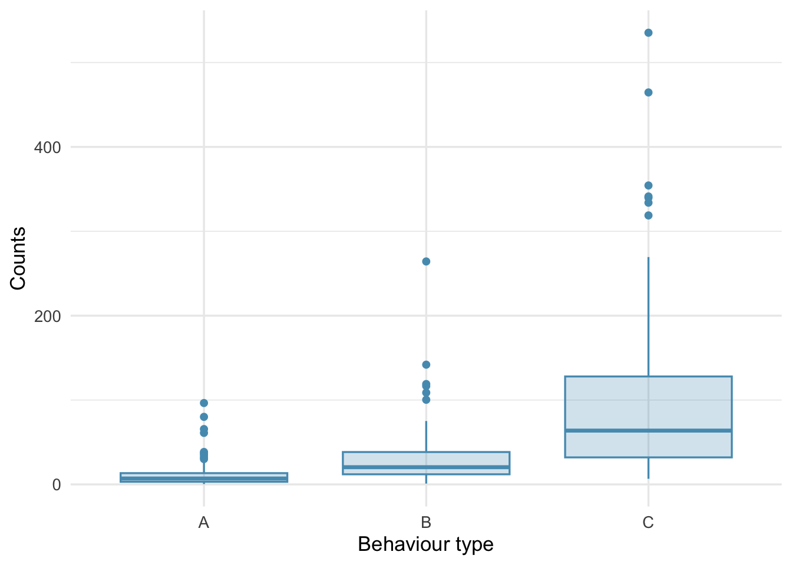
1.2.4 Improving the box plot
In its basic form the box plot does not show us the sample size or the internal detail of the sample distribution, for example whether it is bimodal or not.
We can fix that in at least a couple of ways as shown in ?fig-box-plots-improved. We can add the sample sizes as annotations as we did with the bar charts, and/or we can the data points themselves, with a bit of sideways ‘jitter’ so that they don’t all lie on top of each other. This can be effective if the sample size is not too large.
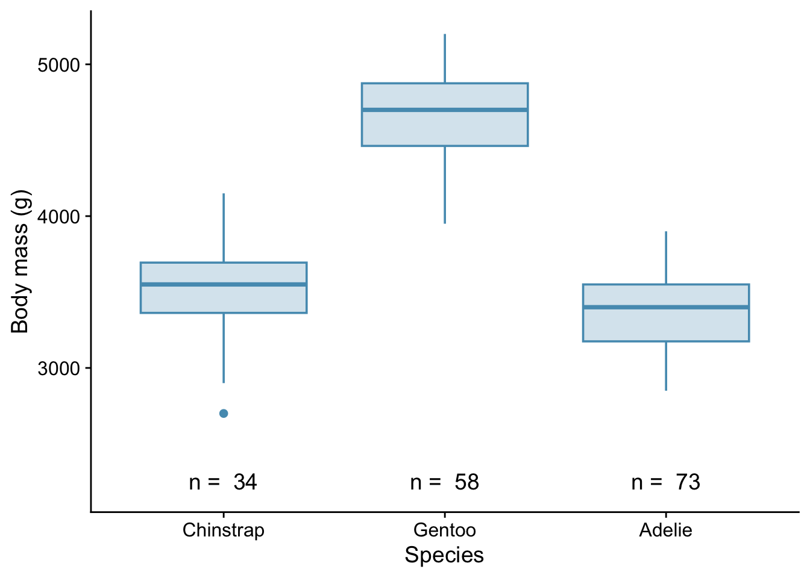
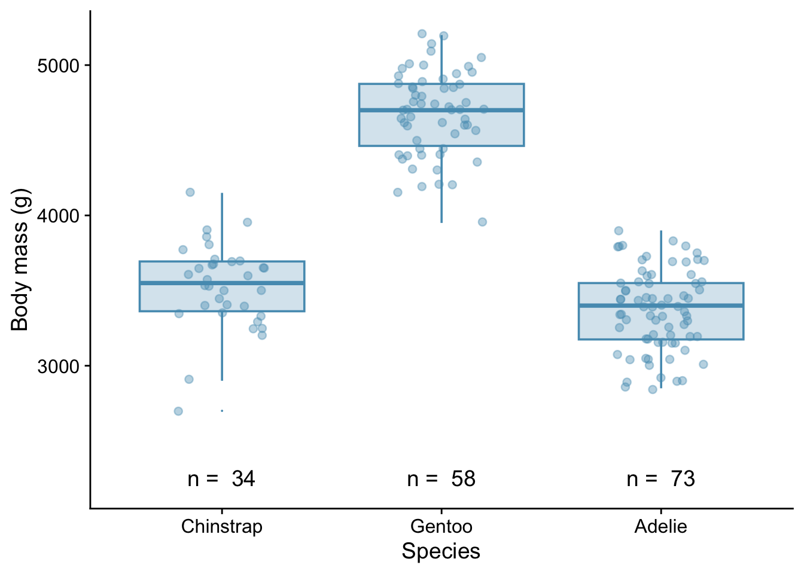

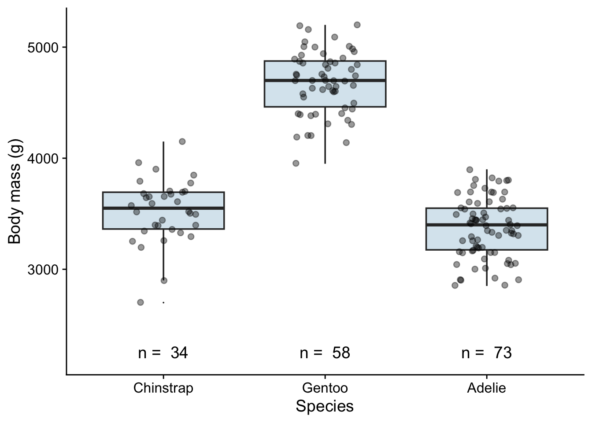